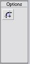
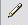

Toolbox
What will you learn
Arrow Tool
Functions of Arrow Tool:
- Move Objects
- Move curves and corners to create new shapes like the ones below from
a square
Subselection Tool
- Subselection tool is used to create anchor points for editing
- After selecting the tool drag and create a box over a selected portion on an object
- It will automatically create anchor points

- Many shapes like the ones below can be created in this manner from
a basic shape, a circle.
Line Tool
- Different colored and patterened lines can be created
- Press Shift and draw the line if you want a perfectly horizontal, vertical or 45 degrees line.
Pen Tool
- A drawing tool to create curves and straight-lined objects
Lasso Tool
- Lasso Tool is used to select part of an object
- Lasso Tool options
Text Tool
- Text tool allows us to write texts with the Properties Panel showing
a number of options

Oval Tool
- Circles and Ovals can be created with this tool
Rectangle Tool
- Rectangle tool options enable us to creat rounded reactangles
 - To create a perfect square press Shift Key
Pencil Tool 
- Pencil Tool options allow us to draw straight lines or smooth lines
Paint Brush Tool
- Paint Brush Tool options
- Options allow us to paint different aspects of an object
Free Transform Tool 
- Free Transform options
- Free transform tool can enlarge, reduce, skew or rotate an object
Fill Transform Tool
- Fill Transform tool is used to edit radial, linear and bitmap fills
- Click the Fill transform tool, then select the gradient in the object
you want to edit
- Once selected, you will be able to enlarge, rotate or skew the gradient fill
Paint Bucket Tool
- Paint Bucket options
- Paint Bucket is also used to fill in with gradient and solid colors
Eraser Tool
- Eraser Options can be used to erase different attributes
Colors
- Colors Tool
- Stroke Color can be chosen with this icon
- Fill color can be chosen with this icon
- Default Color can be chosen by clicking this icon
Default color is Black for Stroke and White for Fill
- When using Rectangle or Oval tool, if you do not want a Fill or Stroke you can click this icon
- This icon
is chosen is you want to swap the stroke and fill colors